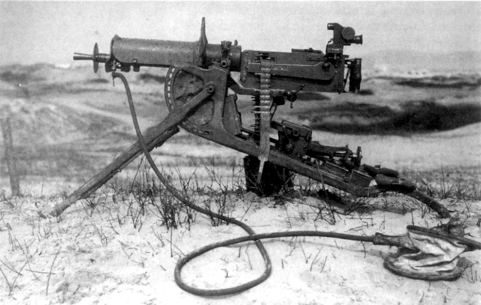

MG08重機槍

Maschinengewehr 08（也稱MG08，Maschinengewehr意為機槍）由海勒姆·馬克沁1884年開發的馬克沁機槍發展而來。是德軍在一戰中使用最廣泛的一種重機槍，由於初期在史賓道（Spandau）生產，故又名史賓道機槍，它還發展出了MG08/15、MG08/18等衍生型號，20世紀30年代中華民國在它的基礎上開發出了二四式重機槍。由於MG34的產量不足，德軍在二戰中依然在陣地戰中使用MG08重機槍。雖然MG08使用帆布彈鏈受雨雪水影響且重複使用次數有限，但其水冷原理和可靠的結構使其可無間斷地連續發射上千枚彈藥，這方面優於氣冷的MG34/42。
- 此槍和其他馬克沁重機槍一樣採用後座作用式，即是利用把子彈彈出的後座力去完成退彈殼和重新上彈，供彈系統使用的是帆布製成的不可散式彈鏈。槍口保護罩兼做消焰器，通常還會加裝一個圓形的小護盾以防止流彈、彈片破壞冷卻水滑套。當發射完一發子彈後，槍機仍然處於閉鎖狀態，槍管同槍機一起後座。槍機使用兩個用鉸鏈連接起來的支杆，它們位於槍管節套和槍機之間，當槍機位於槍管內時，兩個支杆排成直線承受住後座力並將其轉移到槍管節套上。整個槍機組件在槍匣內後座，位於槍匣左側的覆進簧因此被拉伸（大多數槍械中覆進簧是被壓縮）。經過一小段距離的後座後，肘節系統後方的槍機拉柄撞擊到槍匣壁右側的阻鐵，槍機拉柄因而旋轉上升同時放下肘節。開鎖後，空彈殼從槍管內排出，槍機端面抓住彈殼的邊緣向下滑動，將發射過的彈殼送到槍管下方，同抽取管排在一起。同時，槍機端面抽取一發新子彈並將其送到膛室後方。之後槍機開始復進，彈簧收縮將整個槍機組件向前推，肘節從彎曲狀態恢復成直立並向前推動槍機。此時槍機端面同時抓著待發彈和空彈殼，在閉鎖過程的最後階段，槍機端面抬起，排彈管內的空彈殼被排出。此時如果按住扳機不放，擊針就會擊中底火，完成一次射擊。此槍原本發射尖彈（7.92x57IS），後來為了加強其穿透力而改為發射內藏鋼芯的重尖彈（7.92x57sS）。